About Me
Over the past three months, I have attended the programming bootcamp, General Assembly. In that time, I have learned a full-stack set of skills and utilized them on various projects. My first project, Tic Tac Toe, represents a key point in my development as a programmer. It was here that I began to learn effective planning, including wireframes and pseudo-coding, and how to implement unknown tools.
Another project, App-Etite, expanded upon that foundation. I learned how to code and plan with other people. This was a Rails application that allowed people to sign up and then post where they wanted to go to lunch and vote on entries. We implemented a number of new technologies, such as: Rails, Bootstrap and Decrypt. I have a strong interest in games and front-end design. As such, I have been trying to sharpen my skills by teaching myself how to use Unity, supplementing in-class lessons with courses on Code Academy and working on a number of side projects.
Email: courtneyregensburger@yahoo.com
Phone: (513) 368-2670
Linked In: Click me!
Github link: Cregensburger
General Assembly Projects
General Assembly is an educational institute that offers full-time immersive programs, including such courses as: web development, user experience design, and digital marketing. I attended the Web Development Immersive, a three month long bootcamp dedicated to teaching non-programmers a general full-stack set of skills.
While attending WDI, I have learned about a number of tools, including: programming fundamentals, product development, front-end web development and back-end web development.
Below are just a few examples of the work I have done while attending GA.
My first project made for General Assembly. Given four days, we were to create a fully functional tic tac toe app. As it was a solo project, I wrote all of the code. In this project, I implemented Skeleton as a styling tool, which was something I had never used before.
Github Link - https://github.com/Cregensburger/tic-tac-toe Application Link - http://guard-kangaroo-36074.bitballoon.com/

Our group was allowed to come up with our own idea for an application. As such, we opted to make a Rails app that allowed people to post where they wanted to go to lunch and vote. Using such tools as Decrypt and Bootstrap, we were able to implement a new number of features into it.
Github Link - https://github.com/James527/app-etite
Application Link -https://limitless-lake-1270.herokuapp.com/
Provided with the CSS and HTML, my partner and I were given eight hours to code a functioning Hangman game application. We succeeded, mostly using JavaScript.
Github Link - https://github.com/Cregensburger/hangmanProject Application Link - http://movie-title-hangman.bitballoon.com/
Work Experience
Jungle Jim's International Market - Cheesemonger
February 2014 - April 2015
My primary purpose was to prepare top-quality products for our customers, while maintaining a wealth of information about each cheese and meat we handled. This included general information, history, uses and possible recipes. It required me to learn quickly and recall a large amount of information in a short period of time.
Further improved upon my customer service abilities, including conflict management. Entrusted to train new hires for Production and Floor responsibilities. Given responsibility over designing new displays for the Floor.
Wood & Lamping, LLP. - Office Assistant
March 2014 - April 2015
Experienced in a number of legal secretarial tasks, including such duties as closing case files as well as updating on-going client files.
Kroger, Inc. - Produce Clerk
June 2013 - September 2013
Tasked with preparing optimal quality of foods, primarily fresh fruit, at the largest Kroger Grocery in the United States. Learned the basics of good customer service and time management within a fast-paced workplace environment.
University of Dayton - Senior Student Office Assistant
August 2008 - May 2012
Number of office responsibilities including, but not limited to: updating and maintaining information databases, coordinating information backup and retrieval, delivery of key documents between organizations, and assisting in the preparation for RISE (Redefining Investment Strategy Education), the largest student run forum on Investment in the United States.
Developed strong organization, prioritization, and time management skills. Highly skilled in the use of Microsoft Office 2007 and utilizing various search engines.
International Travel
- 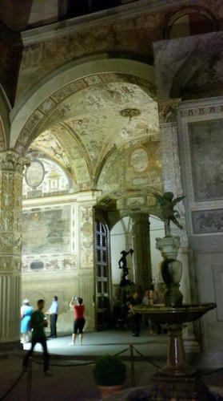
- 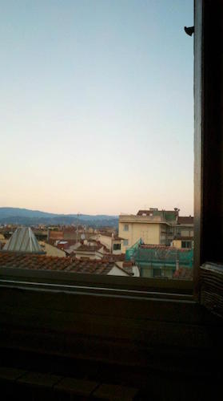
- 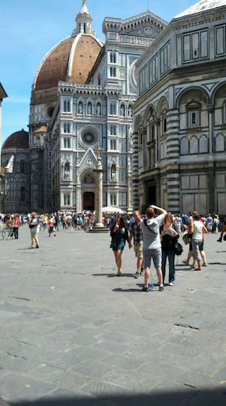
- 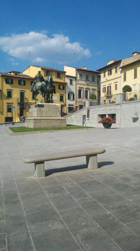
- 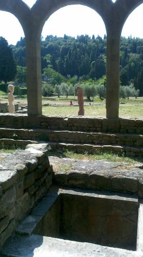
Italy - Study Abroad
June 2011 - July 2011, Florence, Italy
Study Abroad Program through University of Dayton
Spent one month in Florence, Italy for a University of Dayton run study abroad experience. While there, I took classes on the cultural and historical achievements of Florence. This was further supplemented by travel. Once the classes were concluded, I spent the following month traveling around Europe by myself.
Destinations included: Barcelona, Frankfurt, Berlin, Monaco, and Rome. During this time, I had to manage my own affairs, including money, lodging and food.
- 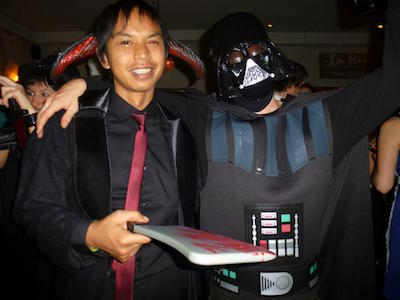
- 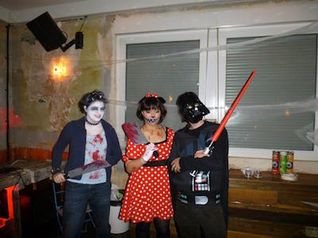
- 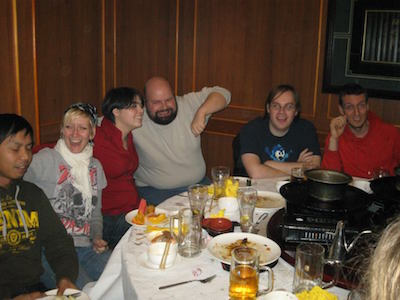
- 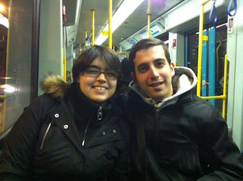
- 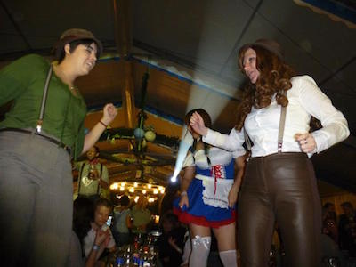
- 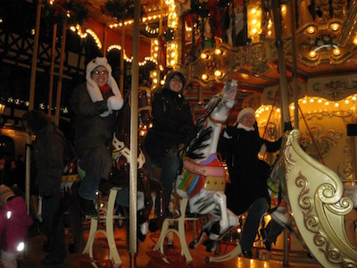
Germany - Independent Travel
October 2012 - December 2012, Frankfurt am Main, Germany
After graduating from University, I returned to Frankfurt, Germany. While there, I made a number of contacts with the European Nintendo Localization Division. I also traveled throughout Germany and Belgium.
Doodles